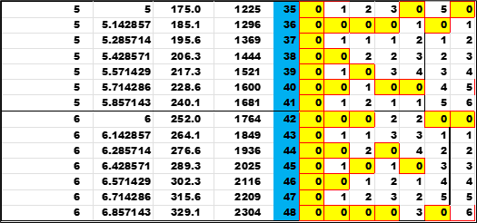
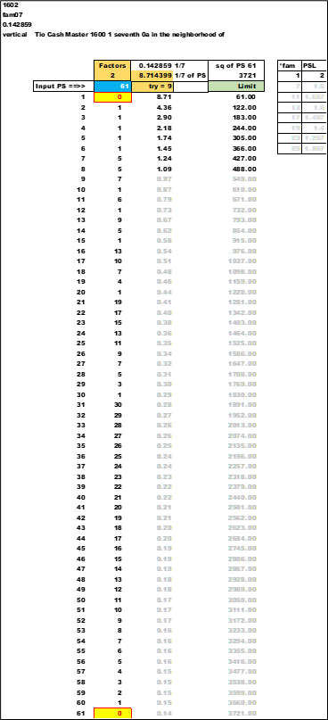
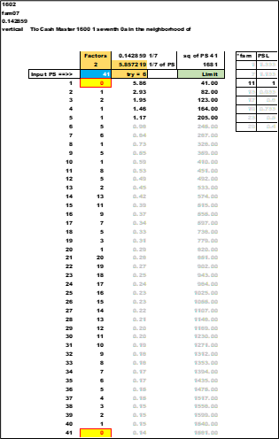
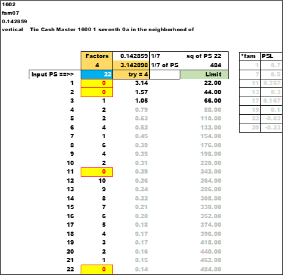
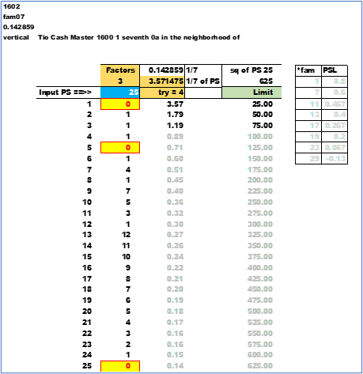
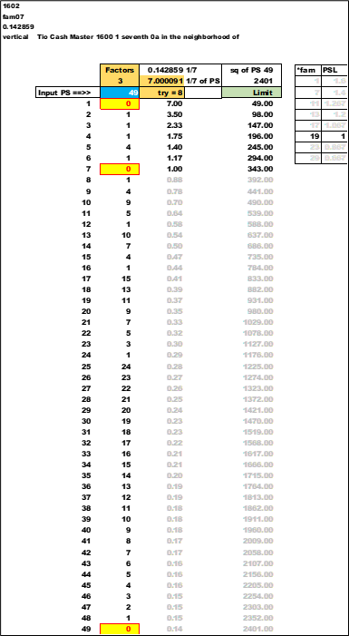
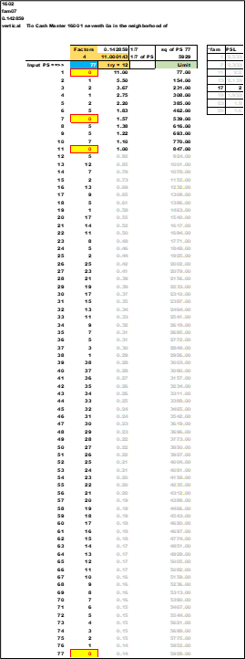

The sq is (PS * PS)
Next is *ratio 1/7 (0.142857) ; the value in the cells is (sq * 1/7).
"fraction" is (PS * 1/7).
group (g7) is the integer value of "fraction" [floor(fraction)]
Here is a close upof two group (g7) ; values of 5 and 6. The dark lines are highlighting the groups. The blue cells are PS going down or to the right.
There are two prime numbers in the (g7) =5 ; 37 and 41. There are also two inside (g7) =6 ; 43 and 47.
"in the neighborhood of" ; all around the primes are solutions to the MOD() function. Within each different (g7) group a solution happens for non-primes before the limit of one-seventh consistently.
Next , "within reason" if a factor of PS is not found within the limit of the (g7) =(0.142857) =(1/7) , then the number is prime.
"Inside_the_">Inside the XLS file
######look for linkTio Cash Master 1600 1 seventh 0a in the neighborhood of
is a sheet: "1602 fam07 0.142859 vertical"
that will calculate the numbers for a PS to find the maximum (g7). This will be the number of times to "try" to look for a factor. Below is a chart of the PS =61.
"try" =9. "try" nine times to find a factor , if none then the number is prime.
The input is the blue box. The *fam and PSL are on the right. There are two (2) factors. 1/7th of PS is 8.714399 ; use the ceiling= () function to account for decimal and get to the next higher integer value. B= elow is the full chart of PS =61. Note the conditional color of yellow backgr= ound and red font to highlight the factors. The light gray and dark font highlig= ht the breakpoint of "try".
prime
prime
Try 6 times to find a factor.
22 non-prime
Not a *fam number. But the 1/7th still works ; "try" = 4.
25 non-prime
The only number to fail the 1/7th test. But any *fam05 has already been sorted off. To include 25 and satisfy the 1/7t test "try" would have to be bumped by +2 for all PS. It is a data exception ; and has been sorted off (excluded) very early in the process.
The focus is *1 , *3 , *7 , *9 ; and all the *fam under them.
49 non-prime
77 non-prime
prime
This is the table limit. Search any number between 0 and 63031 inclusive. 63031 has two factors ; is prime ; and the "try" =9005. Only need to test 9005 times to look for a factor. The top , breakpoint , and bottom of the 63031 charts are shown.
Chapter 1610 "try" and limit group by 30 all PS
next
index